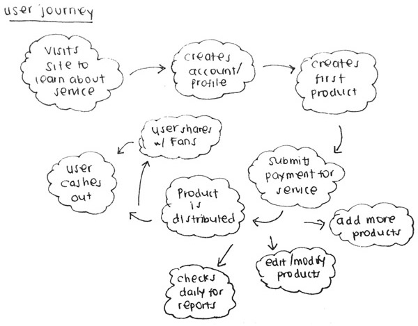

Audiolife: Product Design
What if indie musicians could get their music & merch into major retailers without the need for a distribution deal?
Audiolife is a music distribution and tech startup I worked at after college for several years. We were eventually acquired by Alliance Entertainment, but still able to continue functioning like a startup. With one of the largest distributors of media products to support us, we knew we wanted to build on Alliance’s network of retailers to provide something unique to indie artists that we didn’t currently offer.
The product I designed is a web application that allows independent musicians to use our tools to upload their music and create designs for their CDs and merch. They could then have their products distributed for sale to major online retailers, as well as indie record stores, for a monthly fee.
Since this was a real world project, I got to experience first-hand what it is like to go through the process of designing a complete eco- system rather than a concept. Every single page and detail had to be thought through meticulously, to ensure a seamless experience. Given more time, I would have liked to conduct some user testing, but due to budgeting constraints, this project unfortunately never came into fruition. I chose to include it here as an example of my design work.
My Role
As the sole designer on this product, it was my job to gather the requirements, develop the wireframes, build a prototype, provide the specifications to our developers and design the interface.
Methods
- Competitive analysis
- User journey
- Feature brainstorm
- Sketching
- Wireframing
- Prototyping
- UI design
Tools
- Axure RP
- Photoshop